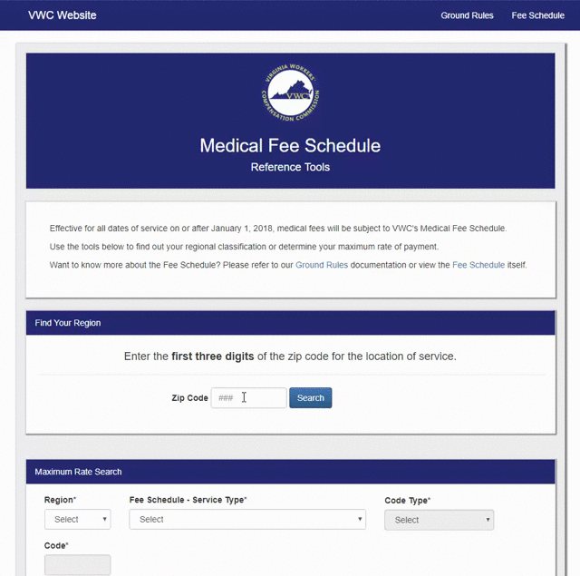

This is a DEMO (unofficial) app prototype of Virginia's Medical Fee Schedule lookup tool. Not to be considered an official source of
information in any way whatsoever. For official information, see here.
Made with React and Bootstrap.
Enter your zip code to determine regional classification

Enter the service type, code, facility type, etc do determine the maximum appropriate rate.